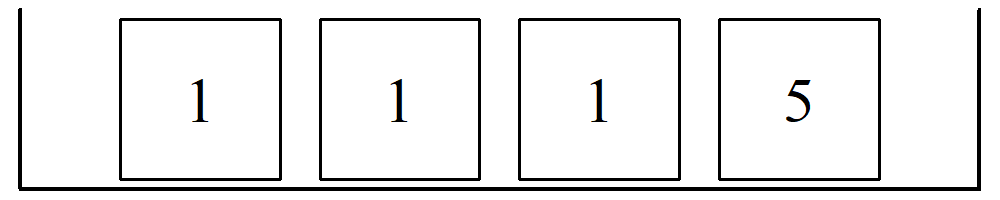
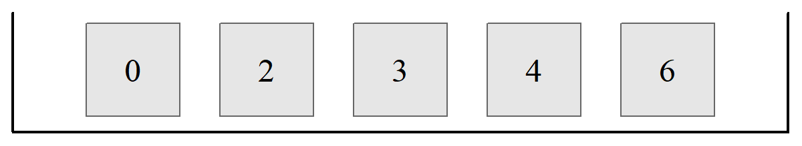
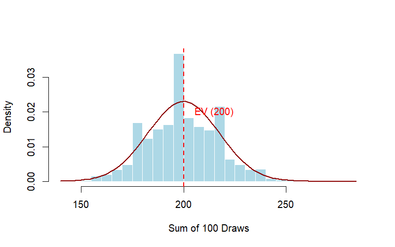
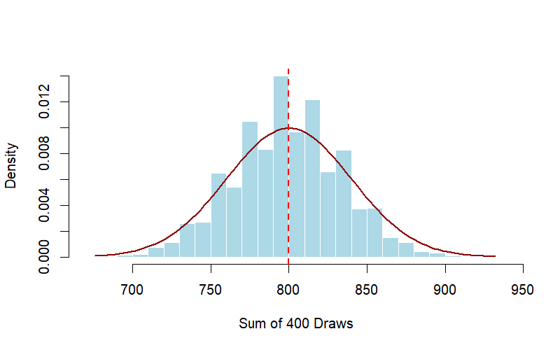

10 The Expected Value and Standard Error
This chapter introduces the fundamental concepts of random processes and their sampling distributions. To keep these ideas manageable, we will motivate them through practical examples and the “Box Model” abstraction.
By the end of this chapter, you will be able to:
- Model random processes using the Box Model framework.
- Calculate the Expected Value (EV) for a sum of random draws.
- Determine its Standard Error (SE).
- Distinguish between the Standard Deviation (SD) of a population and the Standard Error (SE) of a sample.
- Describe the characteristics of a Sampling Distribution, especially the Square Root Law.
10.1 Expected Value (EV)
The expected value represents the average value we anticipate from a random process over many repetitions.
10.1.1 Example 1: 100 Draws
Assume 100 draws are made randomly with replacement from a box containing 4 tickets labeled 1, 1, 1, and 5.

What would be the expected sum of the 100 draws? On average, we expect the ticket labeled “1” to be picked 75 times and the ticket labeled “5” to be picked 25 times.
\[\text{Expected Sum} = (1 \times 75) + (5 \times 25) = 200\]
A more efficient way to calculate the Expected Value (EV) for the sum of draws made at random with replacement is:
\[EV_{\text{sum}} = \text{Average of Box} \times n \tag{10.1}\]
10.2 The Standard Error and Square Root Law
In reality, if we were to actually draw 25 numbers from a box, the actual sum would likely differ from the expected value due to chance error.
\[ \text{Actual Sum} = \text{Expected Value} + \text{Chance Error} \]
Statistics is the art and science of modeling uncertainty. In the equation above, uncertainty is represented by the chance error.
To quantify the likely size of this error, we use the Standard Error (SE). For the sum of draws made at random with replacement, the SE is calculated using the Square Root Law:
\[ SE_{\text{sum}} = \sqrt{n} \times \text{SD of Box} \tag{10.2}\]
10.2.1 Example 2: 25 Draws
Consider 25 draws from a box containing tickets [0, 2, 3, 4, 6].

For this box, the Average is 3 and the SD is 2. For \(n = 25\) draws:
- \(EV_{\text{sum}} = 3 \times 25 = 75\)
- \(SE_{\text{sum}} = \sqrt{25} \times 2 = 10\)
Interpretation: The sum of the 25 draws should be 75, give or take 10 or so.
It is vital to distinguish between these two:
- Standard Deviation (SD) applies to a list of numbers (the population in the box).
- Standard Error (SE) applies to the chance variability of a sample statistic (like the sum of draws).
10.3 Sampling Distribution
A sampling distribution is not a distribution of individual tickets in a box; rather, it is a distribution of a statistic (like a sum or an average) calculated from many different random samples.
Key characteristics include:
- Repeated Sampling: If we calculate \(SUM_1, SUM_2, \dots\) from many different random samples, these sums form a histogram.
- Central Limit Theorem (CLT): This sampling distribution will follow a normal distribution as \(n\) increases. Even if your box only contains “1”s and “5”s, the sampling distribution will tend towards looking like the smooth bell curve.
- Parameters: Since the sampling distribution tends towards a normal distribution, we need only its mean (EV) and its spread (SE) to fully characterize it.
10.3.1 Visualization: Monte-Carlo Simulation
To visualize how a sampling distribution is constructed, imagine following these three steps repeatedly:
- Draw: Take a random sample of size \(n\) with replacement from your box.
- Calculate: Sum the values of the tickets you drew (call this \(SUM_1\)).
- Repeat: Repeat the process hundreds of times to get \(SUM_2, SUM_3, \dots, SUM_{10,000}\).
Let’s return to Example 1 with the box-and-ticket model [1,1,1,5]. To see how the Expected Value (EV) and Standard Error (SE) emerge from random chance, we can simulate the process using any software. Instead of calculating the sum of 100 draws once, we repeat the entire experiment 10,000 times. Then by plotting these 10,000 sums, we draw the sampling distribution of the sum.1

You will notice two key insights from the simulation:
- The Bell Curve: Even though our box only contains two types of tickets (1 and 5), the distribution of the sums takes on the characteristic bell shape of a Normal distribution. This is the Central Limit Theorem in action.
- Predictability: The center of the histogram aligns precisely with our calculated EV (200), and the spread of these sums from different samples reflects our calculated SE (17.32).
10.3.2 Connection to the Central Limit Theorem (CLT)
The most powerful tool in statistics is the Central Limit Theorem. It tells us that regardless of the shape of the original box (even if the box is highly skewed), the sampling distribution of the sum will begin to look like a Normal Curve as the number of draws (\(n\)) increases.
Because the sampling distribution is Normal, it is entirely defined by the two parameters we calculated earlier:
- Center: It is centered at the Expected Value (EV).
- Spread: The width of the sampling distribution is measured by the Standard Error (SE).
10.3.3 The Effect of Sample Size
As \(n\) the number of draws increases, two things happen to the sampling distribution of sums:
- The Center Shifts: Since \(EV = \text{Average of Box} \times n\), the center of the distribution shifts to the right.2
- The Spread Increases: With larger smaple size, the standard error of sums will increase by the square root law – that is, increasing the sample size, by say, four times will result in an increase of the standard error by two (or square root of four) times. You can see the Square Root Law at work!
As the sample size \(n\) increases, say \(k-\)fold, the standard error of sum increases too, but only by the the square root of \(k\).

10.4 The Central Limit Theorem
When drawing from random with replacement from a box, the probability histogram of the sum (a number or statistic that comes from samples of the population we are interested in) will tend to follow a normal curve, even if the contents of the box (i.e. population) do not. This histogram, which we have already called the sampling distribution, is usually expressed in standard units, and the number of draws must be reasonably large for it to assume a bell-shape curve. As with other normal distributions, the expected value pins its center to the horizontal axis, while the standard error fixes its spread.
What if we draw from a box containing 10 tickets, nine 0’s and a single 1? Does the normal approximation work for this lopsided population? The answer is yes. But, if the size of the sample is small, then the resulting empirical distribution may fail to converge to a normal distribution. For less lopsided boxes, for example one containing 3 tickets marked 1, 2 and 3, relatively smaller sized samples would converge to a normal distribution. That is, the more the histogram of the numbers in a box differ from the normal curve, the larger the sample will be needed before the approximation to a normal distribution takes hold.
Be as it may, the central limit theorem (CLT) states that when drawing from a box randomly with replacement, the probability histogram of the sum will follow a normal curve, even if the contents of the box (that is the population) do not. An example should clarify this. the diagram below shows a population with an unknown density distribution function (e.g. a bimodal distribution as shown by the top diagram). If a random sample of \(n\) observations are taken and their means calculated repeatedly for many times, we get the plot of the the histogram of means below, which as can be seen resembles a normal distribution (see the bottom diagram). Whatever the underlying distribution, repeated sampling and plotting the sample averages will five a histogram of more or less normally distributed means.
What is also interesting to note is that if you take a random sample of \(n\) observations from any population, then provided \(n\) is sufficiently large, the distribution of the means will be approximately normal, with a mean of sample averages equal to the population mean, and a standard deviation equal to \(1/\sqrt{n}\) of the standard deviation of the population. We are however going ahead of ourselves. Before we speak of the mean, let’s first look at the percentages or proportions.
10.4.1 Summary of Notation
| Term | Applies to… | Calculated as… |
|---|---|---|
| Average | The Box (Population) | Sum of labels / Number of tickets |
| SD | The Box (Population) | Root-mean-square of deviations |
| EV | The Sample (Statistic) | \(n \times \text{Average of Box}\) |
| SE | The Sample (Statistic) | \(\sqrt{n} \times \text{SD of Box}\) |
10.5 Chapter Summary
- The Box Model helps us visualize population parameters.
- The Expected Value (EV) predicts the average outcome of a random process.
- The Standard Error (SE) measures the likely magnitude of the chance error.
- According to the Square Root Law, the SE of a sum grows with \(\sqrt{n}\), meaning it increases slower than the number of draws itself.
- The central limit theorem states that the sampling distribution of sums or averages tends toward a normal distribution when the sample size is large.
10.6 Exercises: Expected Value and the Standard Error
In the following exercises we explore how expected value and the standard error help us understand the outcomes of repeated random events.
When a random experiment is repeated many times:
- The expected value predicts the average outcome.
- The standard error measures how much the total typically fluctuates around that expectation.
- For independent draws,
\[ SE(\text{sum}) = \sqrt{n} \times SD(\text{one draw}) \]
This is the square-root law.
10.6.1 Conceptual questions
1. Betting on a Single Number
Suppose you bet Baht 100 on a single number.
- If you win, you receive your 100 back plus 200 more.
- If you lose, you lose your 100 Baht stake.
- The probability of winning is 1 in 4.
If you make this bet 100 times, about how much do you expect to win or lose in total? Explain your reasoning.
2. The Square-Root Law
If you quadruple the number of draws, \(n\), from a box, what happens to the standard error of the sum?
- It doubles.
- It quadruples.
- It stays the same.
Explain your answer briefly.
3. Interpreting Standard Error
A gambling game has an expected value of $0 and a standard error of $20 for 100 plays.
If a player plays 100 times, is it unusual for them to be down $50? Explain using the empirical rule.
10.6.2 Guided practice
4. The 100-Draw Box
A box contains the tickets
\[ [0,\;0,\;0,\;0,\;8]. \]
You draw 100 times with replacement.
- Calculate the average and SD of the box.
- Calculate the expected value of the sum of the draws.
- Calculate the standard error of the sum of the draws.
For a box model question, it is often helpful to proceed in this order:
- Find the average of the box.
- Find the SD of the box.
- Use \[ EV(\text{sum}) = n \times \text{Average of box} \]
- Use \[ SE(\text{sum}) = \sqrt{n} \times SD(\text{box}) \]
10.6.3 Box models and repeated draws
5. Repeated Draws from a Box
One hundred draws are made with replacement from the box
\[ 1,\;1,\;2,\;2,\;2,\;4 \]
(a)
What is the smallest possible sum of the 100 draws?
What is the largest possible sum?
(b)
The expected sum of the draws will be around
[ ___ ]
give or take
[ ___ ]
or so.
(c)
The chance that the sum will be greater than 250 is almost
[ ___ %. ]
6. Another Box of Tickets
One hundred draws are made with replacement from the box (from Example 2 in the chapter):
\[ 0,\;2,\;3,\;4,\;6 \]
(a)
How small can the sum be?
How large can it be?
(b)
How likely is the sum to lie between 370 and 430?
Explain briefly.
(c)
Assume this time you pick 25 times form the box with replacement.
The expected sum of the draws will be around
[ ___ ]
give or take
[ ___ ]
10.6.3.1 Choosing between risky options
7. Choosing How Many Draws to Make
You can draw either 10 times or 100 times with replacement from the box
\[ 1,\;-1 \]
You win Baht 100 if certain conditions are met.
How many draws would you choose to make?
(a)
You win if the sum equals 5, and nothing otherwise.
(b)
You win if the sum is −5 or less, and nothing otherwise.
(c)
You win if the sum lies between −5 and 5, and nothing otherwise.
No calculations are necessary, but explain your reasoning.
8. Choosing Between Two Games
A box contains 10 tickets, each marked with a whole number between −5 and 5.
The numbers are not all the same, but the average of the box is 0.
You have two choices:
Game A
Draw 100 times with replacement.
You win Baht 100 if the sum is between −15 and 15.
Game B
Draw 200 times with replacement.
You win Baht 100 if the sum is between −30 and 30.
Which option gives the better chance of winning?
- A gives a better chance of winning.
- B gives a better chance of winning.
- A and B give the same chance of winning.
- Cannot tell without the SD of the box.
Explain your reasoning.
10.6.4 Standard error in familiar settings
9. Rolling Dice
A die is rolled 60 times.
(a)
The total of the spots should be around
[ ___ ]
give or take
[ ___ ]
or so.
(b)
The number of 6’s should be around
[ ___ ]
give or take
[ ___ ]
or so.
10. Tossing a Coin
A fair coin is tossed 100 times.
(a)
Find the expected number of heads.
(b)
Find the standard error for the number of heads.
(c)
Estimate the chance that the number of heads is between 40 and 60.
11. Counting a Particular Ticket
One hundred draws are made with replacement from a box containing several tickets, including tickets marked 5.
What is the chance of getting between 8 and 32 tickets marked “5”?
Explain briefly.
10.6.5 Challenging questions
12. Explaining the Square-Root Law
Suppose a box has average 0 and standard deviation 2.
If you make 400 draws with replacement:
- What is the expected sum?
- What is the standard error of the sum?
Explain clearly how the square-root law determines your answer.
10.6.6 13. Simulation Challenge (Optional)
Use R to simulate the following experiment:
- Draw 100 times with replacement from the box
\[ 0,\;2,\;3,\;4,\;6 \] - Repeat the experiment 10,000 times
Estimate the probability that the sum lies between 370 and 430.
In excel you can use the command
=+CHOOSE(RANDBETWEEN(1,5),0,2,3,4,6)
Below is code you can use:
box <- c(0, 2, 3, 4, 6)
sums <- replicate(10000, sum(sample(box, 100, replace = TRUE)))
mean(sums >= 370 & sums <= 430)And if you prefer Python:
import numpy as np
# Define the box
box = np.array([0, 2, 3, 4, 6])
# Replicate sampling and summing
sums = [np.sum(np.random.choice(box, 100, replace=True)) for _ in range(10000)]
# Compute the proportion of sums between 370 and 430
result = np.mean((np.array(sums) >= 370) & (np.array(sums) <= 430))
print(result)